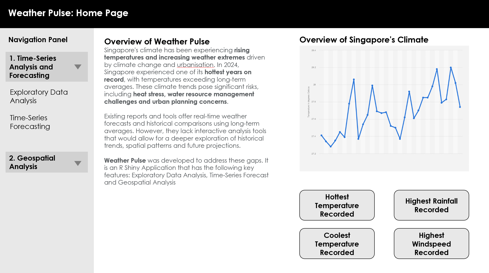
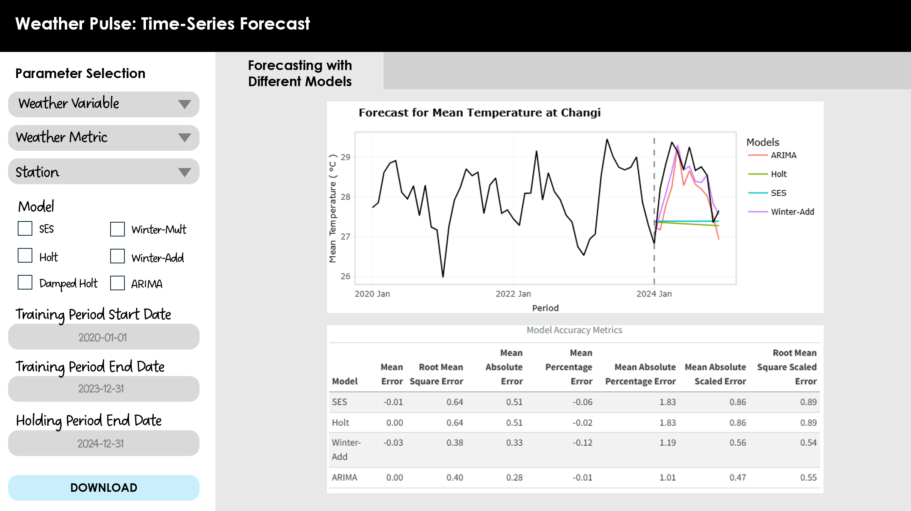

pacman::p_load(readxl, dplyr, readr, lubridate, sf,
tmap, tidyverse, DT, zoo, plotly, magrittr, ggstatsplot,
feasts, tsibble, fable, kableExtra, dplyr, ggrepel)Time-Series Module: Prototyping for the Weather Pulse Application
1.0 Introduction
Singapore’s climate has been experiencing rising temperatures and increasing weather extremes driven by climate change and urbanisation. In 2024, Singapore experienced one of its hottest years on record, with temperatures exceeding long-term averages. These climate trends pose significant risks, including heat stress, water resource management challenges and urban planning concerns.
Existing reports and tools offer real-time weather forecasts and historical comparisons using long-term averages. However, they lack interactive analysis tools that would allow for a deeper exploration of historical trends and future projections.
This report covers the prototypes that were developed for inclusion in the Weather Pulse application.
2.0 Data Preparation
2.1 Loading Packages
2.2 Data Scraping
The dataset was sourced from the Meteorological Service Singaproe (MSS) website1, which provides extensive historical daily records of rainfall, temperature and wind speed. Covering a period from 1980 to 2025, the data is segmented by month, and by each of the 64 weather stations across Singapore. For this project, we focused on the period from 2020 to 2024. We also noted that only 44 out of the 64 stations had downloadable records.
The code block below initializes the data scraping process by reading a list of station codes from a CSV file and setting up a loop to download data for the specified years and months.
stations_df <- read_csv("data/StationList.csv")
station_codes <- stations_df$StationID The main scraping loop, designed to fetch and preprocess the data, is detailed in the code block below:
Important
The data from January 2020 to March 2020 are encoded in latin1, while the data starting from April 2020 are encoded in UTF-8. Therefore, it is essential for the main scraping loop to be robust enough to accommodate both encodings effectively.
Expand to See the Code Block
years <- 2020:2024
months <- sprintf("%02d", 1:12)
base_url <- "https://www.weather.gov.sg/files/dailydata/DAILYDATA_%s_%d%s.csv"
all_data <- list()
i <- 1
for (station in station_codes) {
for (year in years) {
for (month in months) {
url <- sprintf(base_url, station, year, month)
cat("Downloading:", url, "\n")
# Attempt to read with latin1, if it fails, try UTF-8
res <- try({
read_csv(url, locale = locale(encoding = "latin1"), show_col_types = FALSE)
}, silent = TRUE)
if (inherits(res, "try-error")) {
res <- try({
read_csv(url, locale = locale(encoding = "UTF-8"), show_col_types = FALSE)
}, silent = TRUE)
}
# If both fail, continue to the next file
if (inherits(res, "try-error")) {
cat("Failed to read:", url, "\n")
next
}
res <- res %>%
mutate(across(
contains(c("Temperature", "Rainfall", "Wind")),
~ suppressWarnings(as.numeric(.))
)) %>%
mutate(
station = as.character(station),
year = as.integer(year),
month = as.integer(month),
Day = as.integer(Day)
)
all_data[[i]] <- res
i <- i + 1
}
}
}Once the monthly data for each station had been downloaded, the data was subsequently consolidated into a single DataFrame:
Expand to See the Code Block
climate_data <- bind_rows(all_data)
climate_data <- climate_data %>%
mutate(
date = make_date(year, month, Day)
)After the data has been consolidated, the glimpse() function was used to gain a quick understanding of the data structure.
glimpse(climate_data1)Rows: 80,388
Columns: 17
$ Station <chr> "Paya Lebar", "Paya Lebar", "Paya Leba…
$ Year <dbl> 2020, 2020, 2020, 2020, 2020, 2020, 20…
$ Month <dbl> 1, 1, 1, 1, 1, 1, 1, 1, 1, 1, 1, 1, 1,…
$ Day <dbl> 1, 2, 3, 4, 5, 6, 7, 8, 9, 10, 11, 12,…
$ `Daily Rainfall Total (mm)` <dbl> 0.0, 0.2, 0.0, 0.8, 0.0, 31.2, 1.8, 0.…
$ `Highest 30 Min Rainfall (mm)` <dbl> NA, NA, NA, NA, NA, NA, NA, NA, NA, NA…
$ `Highest 60 Min Rainfall (mm)` <dbl> NA, NA, NA, NA, NA, NA, NA, NA, NA, NA…
$ `Highest 120 Min Rainfall (mm)` <dbl> NA, NA, NA, NA, NA, NA, NA, NA, NA, NA…
$ `Mean Temperature (°C)` <dbl> 28.7, 28.5, 28.6, 28.0, 28.7, 27.3, 26…
$ `Maximum Temperature (°C)` <dbl> 32.3, 31.2, 32.2, 31.6, 33.2, 32.6, 30…
$ `Minimum Temperature (°C)` <dbl> 26.3, 26.4, 26.0, 25.4, 25.5, 24.0, 24…
$ `Mean Wind Speed (km/h)` <dbl> 20.2, 17.3, 18.0, 19.1, 20.2, 14.8, 15…
$ `Max Wind Speed (km/h)` <dbl> 46.4, 42.5, 46.4, 48.2, 38.9, 46.4, 44…
$ station <chr> "S06", "S06", "S06", "S06", "S06", "S0…
$ year <dbl> 2020, 2020, 2020, 2020, 2020, 2020, 20…
$ month <dbl> 1, 1, 1, 1, 1, 1, 1, 1, 1, 1, 1, 1, 1,…
$ date <date> 2020-01-01, 2020-01-02, 2020-01-03, 2…To facilitate the development of the R Shiny application, the weather data was split into three separate datasets — rainfall, temperature, and wind speed. Each dataset contains only the relevant variables for the respective weather parameter, alongside essential metadata such as station name, date, and time components.
By isolating each weather component, users can independently explore trends, seasonality, and anomalies for rainfall, temperature, and wind speed. Additionally, this approach simplifies backend logic, improves processing efficiency, and avoids unnecessary overhead from unrelated columns during visualisation and analysis.
Expand to See Code Block
climate_rainfall <- climate_data1 %>%
select(Station, Year, Month, Day, date, station, year, month,
contains("Rainfall"))
climate_temperature <- climate_data1 %>%
select(Station, Year, Month, Day, date, station, year, month,
contains("Temperature"))
climate_windspeed <- climate_data1 %>%
select(Station, Year, Month, Day, date, station, year, month,
contains("Wind"))2.3 Understanding the Data
2.3.1 Checking for Missing Values
It is crucial to identify the extent of missing data, which significantly impacts the subsequent analysis phases. The following code calculates the percentage of missing values for each of the weather variable dataset.
2.3.1.1 Missing Values for the Rainfall Dataset
Expand to See the Code Block
rainfall_missing_by_station <- climate_rainfall %>%
group_by(station) %>%
summarise(across(
contains("Rainfall"),
~mean(is.na(.)) * 100,
.names = "missing_{.col}"
)) %>%
arrange(across(starts_with("missing"), desc))Based on the results of the missing values analysis for the rainfall dataset, all stations contain some degree of missing data. However, a few stations exhibit a significantly higher proportion of missing data, such as Station S29 - Pasir Ris (West), which has more than 10% missing rainfall data primarily concentrated in the year 2021.
To resolve this issue, stations with more than 5% missing data will be excluded from the analysis as a high proportion of missing values may lead to biased trends or seasonality patterns, skewed aggregate statistics or unreliable forecasts. In this case, we will exclude S29, S92, S64, S06 from the rainfall dataset as shown in the code below:
climate_rainfall_filtered <- climate_rainfall %>%
filter(!station %in% c("S29", "S92", "S64", "S06"))For stations with <5% missing data, we employ linear interpolation to estimate the missing values. This method assumes a linear relationship (straight line) between two known data points and calculates the missing values accordingly2. This method is effective for datasets where changes between consecutive data points are expected to be gradual / linear (i.e. weather parameters).
The following code chunk implements linear interpolation in R using the na.approx() function from the zoo` package:
climate_rainfall_interpolated <- climate_rainfall_filtered %>%
arrange(station, date) %>%
group_by(station) %>%
mutate(
`Daily Rainfall Total (mm)` = na.approx(`Daily Rainfall Total (mm)`, x = date, na.rm = FALSE),
`Highest 30 Min Rainfall (mm)` = na.approx(`Highest 30 Min Rainfall (mm)`, x = date, na.rm = FALSE),
`Highest 60 Min Rainfall (mm)` = na.approx(`Highest 60 Min Rainfall (mm)`, x = date, na.rm = FALSE),
`Highest 120 Min Rainfall (mm)` = na.approx(`Highest 120 Min Rainfall (mm)`, x = date, na.rm = FALSE)
) %>%
ungroup()2.3.1.2 Missing Values for the Temperature Dataset
Expand to See the Code Block
temperature_missing_by_station <- climate_temperature %>%
group_by(station) %>%
summarise(across(
contains("Temperature"),
~mean(is.na(.)) * 100,
.names = "missing_{.col}"
)) %>%
arrange(across(starts_with("missing"), desc))Based on the results of the missing values analysis for the temperature dataset, several stations exhibited 100% missing data for temperature measurements, suggesting that these stations may lack the necessary equipment to record temperature.
In line with the approach taken for the rainfall dataset, stations with more than 5% missing data will be excluded from the analysis. The following stations will be removed from the temperature dataset: S07, S08, S112, S113, S114, S119, S123, S29, S33, S35, S40, S64, S66, S69, S71, S77, S78, S79, S81, S84, S88, S89, S90, S92, S94, S108, S23, S80, S25 and S06.
climate_temperature_filtered <- climate_temperature %>%
filter(!station %in% c("S07", "S08", "S112", "S113", "S114", "S119", "S123",
"S29", "S33", "S35", "S40", "S64", "S66", "S69", "S71",
"S77", "S78", "S79", "S81", "S84", "S88", "S89", "S90",
"S92", "S94", "S108", "S23", "S80", "S25", "S06"))Similar to the rainfall dataset, for stations with <5% missing data, we employ linear interpolation to estimate the missing values.
climate_temperature_interpolated <- climate_temperature_filtered %>%
arrange(station, date) %>%
group_by(station) %>%
mutate(
`Mean Temperature (°C)` = na.approx(`Mean Temperature (°C)`, x = date, na.rm = FALSE),
`Maximum Temperature (°C)` = na.approx(`Maximum Temperature (°C)`, x = date, na.rm = FALSE),
`Minimum Temperature (°C)` = na.approx(`Minimum Temperature (°C)`, x = date, na.rm = FALSE)
) %>%
ungroup()2.3.1.3 Missing Values for the Wind Speed Dataset
Expand to See the Code Block
windspeed_missing_by_station <- climate_windspeed %>%
group_by(station) %>%
summarise(across(
contains("Wind"),
~mean(is.na(.)) * 100,
.names = "missing_{.col}"
)) %>%
arrange(across(starts_with("missing"), desc))Like the temperature dataset, several stations exhibited 100% missing data for wind speed measurements. In line with the approach taken for the rainfall and temperature datasets, stations with more than 5% missing data will be excluded from the analysis. The following stations will be removed from the temperature dataset: S07, S08, S112, S113, S114, S119, S123, S29, S33, S35, S40, S64, S66, S69, S71, S77, S78, S79, S81, S84, S88, S89, S90, S92, S94, S80, S23, S60, S44, S50, S43 and S117.
climate_windspeed_filtered <- climate_windspeed %>%
filter(!station %in% c("S07", "S08", "S112", "S113", "S114", "S119", "S123",
"S29", "S33", "S35", "S40", "S64", "S66", "S69", "S71",
"S77", "S78", "S79", "S81", "S84", "S88", "S89", "S90",
"S92", "S94", "S80", "S23", "S60", "S44", "S50", "S43",
"S117"))Similar to the rainfall dataset, for stations with <5% missing data, we employ linear interpolation to estimate the missing values.
climate_windspeed_interpolated <- climate_windspeed_filtered %>%
arrange(station, date) %>%
group_by(station) %>%
mutate(
`Mean Wind Speed (km/h)` = na.approx(`Mean Wind Speed (km/h)`, x = date, na.rm = FALSE),
`Max Wind Speed (km/h)` = na.approx(`Max Wind Speed (km/h)`, x = date, na.rm = FALSE)
) %>%
ungroup()2.3.2 Ensuring Date Completeness
To verify date completeness, we checked that each weather station contains records spanning across 1 January 2020 to 31 December 2024. This step ensures that there are no structural gaps in the time data for any station. The following were computed for each station in the respective data sets:
min_date: The earliest date available in the datasetmax_date: The latest date available.total_days: The number of daily records
Key Findings:
- All stations have consistent start and end dates, with
min_date = 2020-01-01andmax_date = 2024-12-31.
- The
total_dayscolumn confirms that each station has a complete set of daily records (1,827 days), corresponding to 5 full years (including 2020 as a leap year).
- This indicates a uniform and complete time series across all stations and parameters.
The follow sub-sections show the code chunks and corresponding results of the date completeness check for each dataset.
2.3.2.1 Rainfall Dataset
climate_rainfall_interpolated %>%
group_by(station) %>%
summarise(min_date = min(date), max_date = max(date), total_days = n())2.3.2.2 Temperature Dataset
climate_temperature_interpolated %>%
group_by(station) %>%
summarise(min_date = min(date), max_date = max(date), total_days = n())2.3.2.3 Wind Speed Dataset
climate_windspeed_interpolated %>%
group_by(station) %>%
summarise(min_date = min(date), max_date = max(date), total_days = n())3.0 Exploratory Data Analysis
3.1 Calendar Heatmap
A calendar heatmap would be used to visualise daily weather records across different stations and years. Each day is represented as a cell in the heatmap, with colour intensity varying according to value of weather data (such as temperature or rainfall) for that day. The calendar heatmap enables quick identification of trends and / or anomalies over the course of the year.
Key Considerations for Implementation
Parameter Selection: Users should be able to select the following parameters: type of weather data (rainfall, temperature, wind speed), metrics (e.g. mean temperature, max temperature), station, year.
Tooltips: A tooltip that display detailed data values when a user hovers a over specific day’s cell would be implmented. This provide instant access to precise data values, eliminating the ambiguity that may arise from solely interpreting color intensities.
Colour Intensity: The color intensity of each monthly segment varies according to specific weather data values, such as average temperature, total rainfall, or other relevant metrics. A single colour scheme is selected for each variable (e.g. temperature in shades of red, rainfall in shades of blue) to avoid confusion that comes with diverging colour schemes.
Function Objectives
The goal of this functionality is to provide users with a detailed visual representation of daily weather data throughout a selected year. This visualisation enables users to quickly understand day-to-day and month-to-month variations in specific weather parameters.
General Implementation Method
We created a function called create_calendar_heatmap, that takes in four parameters: the dataset, the selected weather station, the year of interest and the variable of interest. The heatmap colour would update depending on the dataset used.
Parameters
| Parameter | Description | UI For Parameter Selection |
|---|---|---|
data |
Type of weather variable: rainfall, temperature, wind speed | Dropdown List |
var_type |
Type of metric for the selected weather variable. For example, under temperature, users can select mean temperature, max temperature, min temperature. | Dropdown List |
selected_station |
The weather station from which the data is drawn. | Dropdown List |
selected_year |
The year from which the data is drawn. | Dropdown List |
Expand to See the Code Block on Function Implementation
create_calendar_heatmap <- function(data, selected_station, selected_year, dataset_type, var_type) {
var_mapping <- list(
"rainfall" = list(
"Daily Rainfall Total" = "Daily Rainfall Total (mm)",
"Highest 30 Min Rainfall" = "Highest 30 Min Rainfall (mm)",
"Highest 60 Min Rainfall" = "Highest 60 Min Rainfall (mm)",
"Highest 120 Min Rainfall" = "Highest 120 Min Rainfall (mm)"
),
"temperature" = list(
"Mean Temperature" = "Mean Temperature (°C)",
"Maximum Temperature" = "Maximum Temperature (°C)",
"Minimum Temperature" = "Minimum Temperature (°C)"
),
"windspeed" = list(
"Mean Wind Speed" = "Mean Wind Speed (km/h)",
"Max Wind Speed" = "Max Wind Speed (km/h)"
)
)
units <- list(
"rainfall" = "mm",
"temperature" = "°C",
"windspeed" = "km/h"
)
color_schemes <- list(
"rainfall" = "Blues",
"temperature" = "Reds",
"windspeed" = "Greens"
)
selected_var <- var_mapping[[dataset_type]][[var_type]]
selected_unit <- units[[dataset_type]]
selected_colorscale <- color_schemes[[dataset_type]]
reverse_scale <- ifelse(dataset_type == "temperature", FALSE, TRUE)
first_day <- as.Date(sprintf("%d-01-01", selected_year))
last_date <- as.Date(sprintf("%d-12-31", selected_year))
plot_data <- data %>%
filter(Station == selected_station,
date >= first_day,
date <= last_date) %>%
mutate(
weekday = wday(date, label = TRUE, abbr = TRUE, week_start = 1),
week_num = floor((yday(date) + wday(first_day, week_start = 1) - 1) / 7),
month_label = factor(month(date, label = TRUE, abbr = TRUE))
) %>%
mutate(
weekday = factor(weekday,
levels = c("Sun", "Mon", "Tue", "Wed", "Thu", "Fri", "Sat"))
)
week_to_month <- plot_data %>%
group_by(week_num) %>%
summarise(month_label = first(month_label))
p <- plot_ly(
data = plot_data,
x = ~week_num,
y = ~weekday,
z = as.formula(paste0("~`", selected_var, "`")),
type = "heatmap",
colorscale = selected_colorscale,
reversescale = reverse_scale,
text = ~paste(
"Date:", date,
"<br>Day:", weekday,
"<br>Month:", month_label,
"<br>", var_type, ":", round(get(selected_var), 1), selected_unit
),
hoverinfo = "text",
hoverongaps = FALSE
) %>%
layout(
title = paste(var_type, "Calendar Heatmap -", selected_station, "(",selected_year,")"),
xaxis = list(
title = "Month",
ticktext = as.character(unique(plot_data$month_label)),
tickvals = sapply(unique(plot_data$month_label),
function(m) median(plot_data$week_num[plot_data$month_label == m]))
),
yaxis = list(
title = "Day of Week",
categoryarray = c("Sun", "Mon", "Tue", "Wed", "Thu", "Fri", "Sat"),
categoryorder = "array",
autorange = "reversed"
),
margin = list(
l = 50,
r = 50,
b = 50,
t = 50
)
) %>%
colorbar(
title = paste(var_type, "(",selected_unit,")"),
orientation = "h",
len = 0.8,
y = -0.4,
thickness = 15
)
return(p)
}Example Usage
3.2 Sunburst Diagram
While the calendar heatmap helps to display daily weather records within the context of a single year, we would also need to visualise weather patterns over multiple years in order to capture longer-term cyclical trends. To achieve this, we intend to employ sunburst diagrams. The sunburst diagram would be structured as follows:
Yearly Segmentation: Each concentric ring in the diagram represents a single calendar year. For instance, the innermost ring might represent the year 2020, with subsequent outer rings representing 2021, 2022, 2023, and up to 2024.
Monthly Segmentation: Within each annual ring, the circle is further divided into 12 equal segments, each representing a month from January to December.
Colour Intensity: The color intensity of each monthly segment varies according to specific weather data values, such as average temperature, total rainfall, or other relevant metrics. A single colour scheme is selected for each variable (e.g. temperature in shades of red, rainfall in shades of blue) to avoid confusion that comes with diverging colour schemes.
Tooltips: A tooltip that display detailed data values when a user hovers a over specific day’s cell would be implemented. This provide instant access to precise data values, eliminating the ambiguity that may arise from solely interpreting color intensities.
Key Considerations for Implementation
- Data Aggregation: Given the daily granularity of our data sets, we would need to aggregate these information into monthly metrics to align with our visualisation structure. However, the aggregation must be tailored to the nature of each metric. For example, for Maximum Temperature, we should find the highest temperature recorded in the month, whereas for Mean Temperature, we should find the average temperature for the month.
Function Objectives
The purpose of this functionality is to enable users to visually explore and understand the cyclical and seasonal patterns in weather parameters through a radial chart.
General Implementation Method
We created a create_sunburst function that generates a sunburst diagram visualisation using plotly. Users can select the following parameters, and the sunburst diagram would update accordingly:
| Parameter | Description | UI For Parameter Selection |
|---|---|---|
data |
Type of weather variable: rainfall, temperature, wind speed | Dropdown List |
var_type |
Type of metric for the selected variable. For example, for temperature, users can select mean temperature, max temperature or min temperature. | Dropdown List |
selected_station |
The weather station from which the data is drawn. | Dropdown List |
year_range |
Defines the range of years over which the data should be visualised. | Checkbox |
Expand to See the Code Block on Function Implementation
create_sunburst <- function(data, selected_station, dataset_type, var_type, year_range) {
var_mapping <- list(
"rainfall" = list(
"Total Rainfall" = "Daily Rainfall Total (mm)",
"Highest 30 Min Rainfall" = "Highest 30 Min Rainfall (mm)",
"Highest 60 Min Rainfall" = "Highest 60 Min Rainfall (mm)",
"Highest 120 Min Rainfall" = "Highest 120 Min Rainfall (mm)"
),
"temperature" = list(
"Mean Temperature" = "Mean Temperature (°C)",
"Maximum Temperature" = "Maximum Temperature (°C)",
"Minimum Temperature" = "Minimum Temperature (°C)"
),
"windspeed" = list(
"Mean Wind Speed" = "Mean Wind Speed (km/h)",
"Max Wind Speed" = "Max Wind Speed (km/h)"
)
)
agg_functions <- list(
"rainfall" = list(
"Total Rainfall" = "sum",
"Highest 30 Min Rainfall" = "max",
"Highest 60 Min Rainfall" = "min",
"Highest 120 Min Rainfall" = "min"
),
"temperature" = list(
"Mean Temperature" = "mean",
"Maximum Temperature" = "max",
"Minimum Temperature" = "min"
),
"windspeed" = list(
"Mean Wind Speed" = "mean",
"Max Wind Speed" = "max"
)
)
units <- list(
"rainfall" = "mm",
"temperature" = "°C",
"windspeed" = "km/h"
)
color_schemes <- list(
"rainfall" = "Blues",
"temperature" = "OrRd",
"windspeed" = "Greens"
)
selected_var <- var_mapping[[dataset_type]][[var_type]]
selected_unit <- units[[dataset_type]]
selected_colorscale <- color_schemes[[dataset_type]]
selected_agg <- agg_functions[[dataset_type]][[var_type]]
reverse_scale <- ifelse(dataset_type == "temperature", FALSE, TRUE)
plot_data <- data %>%
filter(Station == selected_station,
Year >= year_range[1],
Year <= year_range[2]) %>%
group_by(Year, Month) %>%
summarise(
Value = case_when(
selected_agg == "mean" ~ mean(get(selected_var), na.rm = TRUE),
selected_agg == "max" ~ max(get(selected_var), na.rm = TRUE),
selected_agg == "min" ~ min(get(selected_var), na.rm = TRUE),
selected_agg == "sum" ~ sum(get(selected_var), na.rm = TRUE)
),
.groups = 'drop'
)
p <- plot_ly()
years <- year_range[1]:year_range[2]
months <- 1:12
angles <- seq(0, 330, by = 30)
for(i in seq_along(years)) {
year <- years[i]
radius <- i
year_data <- plot_data %>% filter(Year == year)
vals <- sapply(months, function(m) {
val <- year_data$Value[year_data$Month == m]
if(length(val) == 0) return(0)
return(val)
})
p <- p %>% add_trace(
type = "barpolar",
r = rep(1, 12),
theta = angles,
base = radius - 0.45,
width = 29,
marker = list(
color = vals,
colorscale = selected_colorscale,
reversescale = reverse_scale,
showscale = (i == 1),
colorbar = list(
title = paste(var_type, "(", selected_unit, ")"),
len = 0.5,
thickness = 10,
x = 0.95,
y = 0.5,
tickfont = list(size = 10),
titlefont = list(size = 10)
),
line = list(
color = 'white',
width = 2
)
),
name = as.character(year),
text = paste0(
"Year: ", year, "<br>",
"Month: ", month.abb, "<br>",
var_type, ": ", round(vals, 1), " ", selected_unit
),
hoverinfo = "text"
)
}
p <- p %>% layout(
polar = list(
radialaxis = list(
visible = FALSE,
range = c(0, length(years) + 1),
showline = FALSE,
showgrid = FALSE
),
angularaxis = list(
ticktext = month.abb,
tickvals = angles,
direction = "clockwise",
showline = FALSE,
showgrid = FALSE
),
bgcolor = "white"
),
title = list(
text = paste(var_type, "Patterns -", selected_station,
"(", year_range[1], "-", year_range[2], ")"),
y = 0.95,
pad = list(b = 20)
),
margin = list(
t = 100
),
showlegend = FALSE,
paper_bgcolor = "white",
plot_bgcolor = "white"
)
return(p)
}Example Usage
3.3 Line Chart
Line charts may be used to visualise time-series data across multiple weather stations. This visualisation facilitates the comparison of weather trends / patterns over a continuous period.This function enables users to compare temporal variables.
Function Objectives
The purpose of this functionality is to provide users with a dynamic and detailed visualization of weather parameter trends across multiple stations within a specified date range.
General Implementation method
We developed a function named create_line_chart, using plotly.
- Tooltips: A tooltip that display detailed data values when a user hovers a over specific day’s point on the line chart would be implemented. This provide instant access to precise data values, eliminating the ambiguity.
Users can also select the following parameters:
| Parameter | Description | UI For Parameter Selection |
|---|---|---|
data |
The type of weather variable under study: rainfall, temperature or wind speed. | Dropdown List |
selected_station |
The weather station from which the data is drawn. Users can select multiple stations for comparison. | Checkbox |
var_type |
The type of metric for the selected weather variable. For example, for temperature, users can select mean temperature, max temperature or min temperature. | Dropdown List |
date_range |
Defines the range of dateover which the data should be visualised. | Input boxes for start date and end date |
Expand to See the Code Block on Function Implementation
create_line_chart <- function(data, selected_stations, dataset_type, var_type, date_range) {
var_mapping <- list(
"rainfall" = list(
"Total Rainfall" = "Daily Rainfall Total (mm)",
"Highest 30 Min Rainfall" = "Highest 30 Min Rainfall (mm)",
"Highest 60 Min Rainfall" = "Highest 60 Min Rainfall (mm)",
"Highest 120 Min Rainfall" = "Highest 120 Min Rainfall (mm)"
),
"temperature" = list(
"Mean Temperature" = "Mean Temperature (°C)",
"Maximum Temperature" = "Maximum Temperature (°C)",
"Minimum Temperature" = "Minimum Temperature (°C)"
),
"windspeed" = list(
"Mean Wind Speed" = "Mean Wind Speed (km/h)",
"Max Wind Speed" = "Max Wind Speed (km/h)"
)
)
agg_functions <- list(
"rainfall" = list(
"Total Rainfall" = "sum",
"Highest 30 Min Rainfall" = "max",
"Highest 60 Min Rainfall" = "min",
"Highest 120 Min Rainfall" = "min"
),
"temperature" = list(
"Mean Temperature" = "mean",
"Maximum Temperature" = "max",
"Minimum Temperature" = "min"
),
"windspeed" = list(
"Mean Wind Speed" = "mean",
"Max Wind Speed" = "max"
)
)
units <- list(
"rainfall" = "mm",
"temperature" = "°C",
"windspeed" = "km/h"
)
selected_var <- var_mapping[[dataset_type]][[var_type]]
selected_unit <- units[[dataset_type]]
selected_agg <- agg_functions[[dataset_type]][[var_type]]
plot_data <- data %>%
filter(Station %in% selected_stations,
date >= as.Date(date_range[1]),
date <= as.Date(date_range[2])) %>%
group_by(Station, Year = year(date), Month = month(date)) %>%
summarise(
Value = case_when(
selected_agg == "mean" ~ mean(get(selected_var), na.rm = TRUE),
selected_agg == "max" ~ max(get(selected_var), na.rm = TRUE),
selected_agg == "min" ~ min(get(selected_var), na.rm = TRUE),
selected_agg == "sum" ~ sum(get(selected_var), na.rm = TRUE)
),
.groups = 'drop'
) %>%
mutate(Date = as.Date(paste(Year, Month, "01", sep = "-"))) %>%
arrange(Station, Date)
colors <- RColorBrewer::brewer.pal(12, "Dark2")[1:length(selected_stations)]
if(length(selected_stations) > 12) {
colors <- rep(colors, ceiling(length(selected_stations)/12))[1:length(selected_stations)]
}
p <- plot_ly() %>%
layout(
xaxis = list(
title = "",
tickformat = "%b %Y",
tickangle = 45,
range = c(as.Date(date_range[1]), as.Date(date_range[2]))
),
yaxis = list(
title = paste(var_type, "(", selected_unit, ")")
),
title = list(
text = paste(var_type, "Trends by Station"),
y = 0.95
),
hovermode = "x unified",
showlegend = TRUE,
legend = list(
title = list(
text = "Stations"
),
x = 1.02,
y = 1,
xanchor = "left",
font = list(
size = 10
),
itemsizing = "constant"
),
margin = list(
l = 50,
r = 150,
t = 50,
b = 100
)
)
for(i in seq_along(selected_stations)) {
station_data <- plot_data %>% filter(Station == selected_stations[i])
p <- p %>% add_trace(
data = station_data,
x = ~Date,
y = ~Value,
type = 'scatter',
mode = 'lines',
line = list(
color = colors[i],
width = 2
),
hovertemplate = paste(
"Station: %{fullData.name}<br>",
"Month: %{x|%b %Y}<br>",
paste(var_type, ": %{y:.1f}", selected_unit),
"<extra></extra>"
),
name = selected_stations[i]
)
}
return(p)
}Example Usage
Mean Temperature @ Admiralty, Changi, Ang Mo Kio (2020 - 2024)
3.4 STL Decomposition
We planned to include a STL Decomposition function in our Shiny application,decomposes time-series data into seasonal, trend, and residual components. While the initial EDA tools implemented is used primarily for initial data exploration (helping to uncover patterns, trends, and anomalies in a visually intuitive manner), STL decomposition visusalises a structural separation of components, allowing users to understand:
Underlying patterns explicitly
Which patterns in the data are predictable (trend and seasonal) and which are not (residual).
By understanding each component of the time series data, users can identify and shortlist the model required for time-series forecasting.
Function Objectives
The goal of this function is to empower users to decompose their selected time series data into its fundamental components in order to enhance user comprehension of the data, in preparation for advanced statistical modelling / forecasting.
General Implementation Method
We developed a function named create_ts_decomposition, using STL.
Users can also select the following parameters and the charts would be generated accordingly:
| Parameter | Description | UI For Parameter Selection |
|---|---|---|
dataset_type |
The type of weather variable under study: rainfall, temperature or wind speed. | Dropdown List |
selected_station |
The weather station from which the data is drawn. | Checkbox |
selected_var |
The type of metric for the selected weather variable. For example, for temperature, users can select mean temperature, max temperature or min temperature. | Dropdown List |
date_range |
Defines the range of dateover which the data should be visualised. | Input boxes for start date and end date |
Expand to See the Code Block on Function Implementation
create_ts_decomposition <- function(dataset_type,
selected_station,
selected_var,
date_range = c("2020-01-01", "2024-12-31")) {
var_mapping <- list(
"rainfall" = list(
"Total Rainfall" = "Daily Rainfall Total (mm)",
"Highest 30 Min Rainfall" = "Highest 30 Min Rainfall (mm)",
"Highest 60 Min Rainfall" = "Highest 60 Min Rainfall (mm)",
"Highest 120 Min Rainfall" = "Highest 120 Min Rainfall (mm)"
),
"temperature" = list(
"Mean Temperature" = "Mean Temperature (°C)",
"Maximum Temperature" = "Maximum Temperature (°C)",
"Minimum Temperature" = "Minimum Temperature (°C)"
),
"windspeed" = list(
"Mean Wind Speed" = "Mean Wind Speed (km/h)",
"Max Wind Speed" = "Max Wind Speed (km/h)"
)
)
units <- list(
"rainfall" = "mm",
"temperature" = "°C",
"windspeed" = "km/h"
)
data <- switch(dataset_type,
"rainfall" = climate_rainfall_interpolated,
"temperature" = climate_temperature_interpolated,
"windspeed" = climate_windspeed_interpolated,
stop("Invalid dataset type"))
start_date <- as.Date(date_range[1])
end_date <- as.Date(date_range[2])
months_diff <- length(seq(start_date, end_date, by = "month"))
message("Date range: ", start_date, " to ", end_date)
message("Number of months in range: ", months_diff)
ts_data <- data %>%
filter(Station == selected_station,
date >= start_date,
date <= end_date) %>%
select(date, Station, !!sym(var_mapping[[dataset_type]][[selected_var]])) %>%
rename(Value = !!sym(var_mapping[[dataset_type]][[selected_var]])) %>%
mutate(
year_month = yearmonth(date)
) %>%
group_by(year_month) %>%
summarise(
Value = mean(Value, na.rm = TRUE),
.groups = 'drop'
) %>%
as_tsibble(index = year_month) %>%
fill_gaps()
message("Number of observations in dataset: ", nrow(ts_data))
if (nrow(ts_data) < 24) {
stop("Not enough data for decomposition. Need at least 24 months of data. Current months: ", nrow(ts_data))
}
title <- paste(selected_var, "Time Series Decomposition at", selected_station,
"\nPeriod:", format(start_date, "%b %Y"),
"to", format(end_date, "%b %Y"))
decomp_plot <- ts_data %>%
model(
stl = STL(Value ~ season(period = 12) + trend())
) %>%
components() %>%
autoplot() +
theme_bw() +
labs(
title = title,
x = "Period",
y = paste(selected_var, "(", units[[dataset_type]], ")"),
season_year = "Seasonal Pattern",
trend = "Trend",
remainder = "Random"
) +
theme(
plot.title = element_text(size = 12, face = "bold"),
axis.title = element_text(size = 10),
axis.text = element_text(size = 9),
legend.position = "none"
)
return(decomp_plot)
}Example Usage
4.0 Confirmatory Data Analysis (Optional)
We considered incorporating confirmatory data analysis in our Shiny app. This function, designed using ggstatsplot, allows users to perform statistical comparisons across different years for a selected weather station and variable.
We created a function named create_between_stats to perform the confirmatory data analysis. Apart from allowing users to choosing the dataset_type, station, years as per EDA, this function would also allow users to choose the statistical approach used in the CDA: parametric, non-parametric, robust or Bayesian. Users can also speciy the confidence level of the analysis.
Expand to See the Code Block on Function Implementation
create_between_stats <- function(dataset_type,
selected_station,
selected_var,
years = c(2020:2024),
stat_approach = "p",
conf_level = 0.95) {
var_mapping <- list(
"rainfall" = list(
"Total Rainfall" = "Daily Rainfall Total (mm)",
"Highest 30 Min Rainfall" = "Highest 30 Min Rainfall (mm)",
"Highest 60 Min Rainfall" = "Highest 60 Min Rainfall (mm)",
"Highest 120 Min Rainfall" = "Highest 120 Min Rainfall (mm)"
),
"temperature" = list(
"Mean Temperature" = "Mean Temperature (°C)",
"Maximum Temperature" = "Maximum Temperature (°C)",
"Minimum Temperature" = "Minimum Temperature (°C)"
),
"windspeed" = list(
"Mean Wind Speed" = "Mean Wind Speed (km/h)",
"Max Wind Speed" = "Max Wind Speed (km/h)"
)
)
data <- switch(dataset_type,
"rainfall" = climate_rainfall_interpolated,
"temperature" = climate_temperature_interpolated,
"windspeed" = climate_windspeed_interpolated,
stop("Invalid dataset type"))
plot_data <- data %>%
filter(Station == selected_station,
year(date) %in% years) %>%
select(date, Station, !!sym(var_mapping[[dataset_type]][[selected_var]])) %>%
mutate(Year = as.factor(year(date))) %>%
rename(Value = !!sym(var_mapping[[dataset_type]][[selected_var]]))
title <- paste(selected_var, "Distribution by Year at", selected_station)
subtitle <- case_when(
stat_approach == "p" ~ "Parametric statistics",
stat_approach == "np" ~ "Non-parametric statistics",
stat_approach == "r" ~ "Robust statistics",
TRUE ~ "Bayes statistics"
)
p <- ggbetweenstats(
data = plot_data,
x = Year,
y = Value,
type = stat_approach,
mean.ci = TRUE,
conf.level = conf_level,
pairwise.comparisons = TRUE,
pairwise.display = "s",
p.adjust.method = "fdr",
messages = FALSE,
title = title,
subtitle = subtitle
)
return(p)
}Example Usage
5.0 Time-Series Analysis: Visualising Time-Series Forecasting of Weather Parameters
5.1 Time-Series Forecasting: Model Diagnostics / Assumptions
Before users begin forecasting the various weather parameters, we created a create_model_diagnostics function to assist in validating the assumptions of the time-series models by visualising the residuals. These diagnostics are crucial for ensuring that the model fits the data appropriately and that the forecasts it produces are reliable. The function handles different types of weather data—rainfall, temperature, and windspeed—and supports several model types including Simple Exponential Smoothing (SES), Holt’s linear trend method, Holt-Winters seasonal methods, and ARIMA.
The diagnostics plots include the following:
- Residuals Plot: Shows the residuals over time to help identify any apparent trends or patterns that the model hasn’t captured. A random scatter of points around the zero line suggests that the model has successfully captured the underlying patterns in the data.
ACF Plot: Displays the autocorrelation of the residuals. For a well-fitted model, we expect no significant autocorrelation in the residuals; significant spikes might indicate a model misspecification.
Histogram of Residuals: Aids in checking the normality of the residuals. The histogram should ideally resemble a normal distribution, indicating that the prediction errors are random and model assumptions hold.
Users can select the following parameters:
| Parameter | Description | UI For Parameter Selection |
|---|---|---|
dataset_type |
The type of weather variable under study: rainfall, temperature or wind speed. | Dropdown List |
selected_station |
The weather station from which the data is drawn. | Dropdown List |
selected_var |
The type of metric for the selected weather variable. For example, for temperature, users can select mean temperature, max temperature or min temperature. | Dropdown List |
selected_model |
Users can choose from a range of models, including SES, Holt, Damped Hold, Holt-Winters (additive and multiplicative), and ARIMA. | Dropdown List |
training_start, training_end |
Users can specify training and holdout periods. | Input fields. |
Expand to See the Code Block on Function Implementation
create_model_diagnostics <- function(dataset_type,
selected_station,
selected_var,
selected_model,
training_start = "2020-01-01",
training_end = "2023-12-31") {
var_mapping <- list(
"rainfall" = list(
"Total Rainfall" = "Daily Rainfall Total (mm)",
"Highest 30 Min Rainfall" = "Highest 30 Min Rainfall (mm)",
"Highest 60 Min Rainfall" = "Highest 60 Min Rainfall (mm)",
"Highest 120 Min Rainfall" = "Highest 120 Min Rainfall (mm)"
),
"temperature" = list(
"Mean Temperature" = "Mean Temperature (°C)",
"Maximum Temperature" = "Maximum Temperature (°C)",
"Minimum Temperature" = "Minimum Temperature (°C)"
),
"windspeed" = list(
"Mean Wind Speed" = "Mean Wind Speed (km/h)",
"Max Wind Speed" = "Max Wind Speed (km/h)"
)
)
data <- switch(dataset_type,
"rainfall" = climate_rainfall_interpolated,
"temperature" = climate_temperature_interpolated,
"windspeed" = climate_windspeed_interpolated,
stop("Invalid dataset type"))
training_start_date <- as.Date(training_start)
training_end_date <- as.Date(training_end)
ts_data <- data %>%
filter(Station == selected_station,
date >= training_start_date,
date <= training_end_date) %>%
select(date, Station, !!sym(var_mapping[[dataset_type]][[selected_var]])) %>%
rename(Value = !!sym(var_mapping[[dataset_type]][[selected_var]])) %>%
mutate(year_month = yearmonth(date)) %>%
group_by(year_month) %>%
summarise(Value = mean(Value, na.rm = TRUE),
.groups = 'drop') %>%
as_tsibble(index = year_month) %>%
fill_gaps()
model_spec <- switch(selected_model,
"SES" = ETS(Value ~ error("A") + trend("N") + season("N")),
"Holt" = ETS(Value ~ error("A") + trend("A") + season("N")),
"Damped Holt" = ETS(Value ~ error("A") + trend("Ad") + season("N")),
"Winter-Add" = ETS(Value ~ error("A") + trend("A") + season("A")),
"Winter-Mult" = ETS(Value ~ error("M") + trend("A") + season("M")),
"ARIMA" = ARIMA(Value),
stop("Invalid model type"))
fit <- ts_data %>%
model(Model = model_spec)
residuals_plot <- fit %>%
augment() %>%
autoplot(.innov) +
labs(title = paste("Residuals Plot for", selected_model, "Model"),
subtitle = paste("Station:", selected_station, "| Variable:", selected_var),
y = "Residuals",
x = "Time") +
theme_light() +
theme(plot.title = element_text(size = 12, face = "bold"),
plot.subtitle = element_text(size = 10),
axis.title = element_text(size = 10),
axis.text = element_text(size = 9))
acf_plot <- fit %>%
augment() %>%
ACF(.innov) %>%
autoplot() +
labs(title = "ACF of Residuals") +
theme_light()
hist_plot <- fit %>%
augment() %>%
ggplot(aes(x = .innov)) +
geom_histogram(bins = 30, fill = "steelblue", color = "white") +
labs(title = "Histogram of Residuals",
x = "Residuals",
y = "Count") +
theme_light()
combined_plot <- gridExtra::grid.arrange(
residuals_plot, acf_plot, hist_plot,
ncol = 1,
heights = c(1, 1, 1)
)
return(combined_plot)
}Example Usage
5.2 Time-Series Forecasting: Model Comparisons
After gaining an understanding of the time-series data via the EDA tools in Section 3.0, users can use the time-series forcasting tool to forecast weather parameters using various statistical models.
Function Objective
The goal of this functionality is to empower users to not only generate but also compare forecasts from multiple models, thereby identifying the most accurate predictive model for their specific context.
General Implementation Method
We developed a function, create_forecast, that users can interact with to perform weather forecasts based on historical data, using forecast() of fable. Users can select and interact with the following parameters:
| Parameter | Description | UI For Parameter Selection |
|---|---|---|
dataset_type |
The type of weather variable under study: rainfall, temperature or wind speed. | Dropdown List |
selected_station |
The weather station from which the data is drawn. | Dropdown List |
selected_var |
The type of metric for the selected weather variable. For example, for temperature, users can select mean temperature, max temperature or min temperature. | Dropdown List |
models |
Users can choose from a range of models, including SES, Holt, Damped Hold, Holt-Winters (additive and multiplicative), and ARIMA. | Checkbox |
training_start, training_end, holdout_end |
Users can specify training and holdout periods. | Input fields |
The function outputs an interactive plot that visually compares the forecasted data against actual data. Users can hover over the line chart for more details on the data value. A reference line was added in the plot to allow users to know when the holdout period starts. The function also outputs a table that displays forecasting accuracy metrics such as AIC, BIC, and AICc. These plots are generated using ggplotly.
Expand to See the Code Block on Function Implementation
create_forecast <- function(dataset_type,
selected_station,
selected_var,
training_start = "2020-01-01",
training_end = "2023-12-31",
holdout_end = "2024-12-31",
models = c("SES", "Holt", "Damped Holt", "Winter-Add", "Winter-Mult", "ARIMA")) {
var_mapping <- list(
"rainfall" = list(
"Total Rainfall" = "Daily Rainfall Total (mm)",
"Highest 30 Min Rainfall" = "Highest 30 Min Rainfall (mm)",
"Highest 60 Min Rainfall" = "Highest 60 Min Rainfall (mm)",
"Highest 120 Min Rainfall" = "Highest 120 Min Rainfall (mm)"
),
"temperature" = list(
"Mean Temperature" = "Mean Temperature (°C)",
"Maximum Temperature" = "Maximum Temperature (°C)",
"Minimum Temperature" = "Minimum Temperature (°C)"
),
"windspeed" = list(
"Mean Wind Speed" = "Mean Wind Speed (km/h)",
"Max Wind Speed" = "Max Wind Speed (km/h)"
)
)
units <- list(
"rainfall" = "mm",
"temperature" = "°C",
"windspeed" = "km/h"
)
data <- switch(dataset_type,
"rainfall" = climate_rainfall_interpolated,
"temperature" = climate_temperature_interpolated,
"windspeed" = climate_windspeed_interpolated,
stop("Invalid dataset type"))
training_start_date <- as.Date(training_start)
training_end_date <- as.Date(training_end)
holdout_end_date <- as.Date(holdout_end)
horizon <- length(seq(training_end_date, holdout_end_date, by = "month")) - 1
message("Training period: ", training_start_date, " to ", training_end_date)
message("Holdout period end: ", holdout_end_date)
message("Forecast horizon (months): ", horizon)
ts_data <- data %>%
filter(Station == selected_station,
date >= training_start_date,
date <= holdout_end_date) %>%
select(date, Station, !!sym(var_mapping[[dataset_type]][[selected_var]])) %>%
rename(Value = !!sym(var_mapping[[dataset_type]][[selected_var]])) %>%
mutate(
year_month = yearmonth(date),
Type = if_else(date <= training_end_date, "Training", "Hold-out")
) %>%
group_by(year_month) %>%
summarise(
Value = mean(Value, na.rm = TRUE),
Type = first(Type),
.groups = 'drop'
) %>%
as_tsibble(index = year_month) %>%
fill_gaps()
training_data <- ts_data %>%
filter(Type == "Training")
model_spec <- list()
if ("SES" %in% models) {
model_spec$SES <- ETS(Value ~ error("A") + trend("N") + season("N"))
}
if ("Holt" %in% models) {
model_spec$Holt <- ETS(Value ~ error("A") + trend("A") + season("N"))
}
if ("Damped Holt" %in% models) {
model_spec$`Damped Holt` <- ETS(Value ~ error("A") + trend("Ad") + season("N"))
}
if ("Winter-Add" %in% models) {
model_spec$`Winter-Add` <- ETS(Value ~ error("A") + trend("A") + season("A"))
}
if ("Winter-Mult" %in% models) {
model_spec$`Winter-Mult` <- ETS(Value ~ error("M") + trend("A") + season("M"))
}
if ("ARIMA" %in% models) {
model_spec$ARIMA <- ARIMA(Value)
}
fit_models <- training_data %>%
model(!!!model_spec)
forecast_data <- fit_models %>%
forecast(h = paste(horizon, "months"))
base_plot <- forecast_data %>%
autoplot(ts_data, level = NULL) +
theme_light() +
geom_vline(xintercept = yearmonth(training_end_date +days(1)),
linetype = "dashed",
color = "grey50") +
labs(
title = paste("Forecast for", selected_var, "at", selected_station),
subtitle = paste("Training:", format(training_start_date, "%b %Y"),
"to", format(training_end_date, "%b %Y"),
"| Holdout:", format(holdout_end_date, "%b %Y")),
x = "Period",
y = paste(selected_var, "(", units[[dataset_type]], ")")
) +
theme(
plot.title = element_text(size = 12, face = "bold"),
axis.title = element_text(size = 10),
axis.text = element_text(size = 9)
)
forecast_plot <- ggplotly(base_plot, tooltip = c("x", "y", ".model")) %>%
layout(
hoverlabel = list(bgcolor = "white"),
showlegend = TRUE,
legend = list(title = list(text = "Models"))
)
for(i in 1:length(forecast_plot$x$data)) {
forecast_plot$x$data[[i]]$text <- format(as.Date(forecast_plot$x$data[[i]]$x), "%b %Y")
forecast_plot$x$data[[i]]$hovertemplate <- paste(
"%{text}<br>",
"Value: %{y:.1f}", units[[dataset_type]], "<br>",
"Model: ", forecast_plot$x$data[[i]]$name, "<br>",
"<extra></extra>"
)
}
accuracy_table <- fit_models %>%
accuracy() %>%
select(.model, ME, RMSE, MAE, MPE, MAPE, MASE, RMSSE) %>%
rename(
Model = .model,
"Mean Error" = ME,
"Root Mean Square Error" = RMSE,
"Mean Absolute Error" = MAE,
"Mean Percentage Error" = MPE,
"Mean Absolute Percentage Error" = MAPE,
"Mean Absolute Scaled Error" = MASE,
"Root Mean Square Scaled Error" = RMSSE
) %>%
kable(
caption = "Model Accuracy Metrics",
format = "html",
digits = 2
) %>%
kable_styling(
bootstrap_options = c("striped", "hover", "condensed"),
full_width = FALSE
)
return(list(
plot = forecast_plot,
table = accuracy_table
))
}Example Usage
| Model | Mean Error | Root Mean Square Error | Mean Absolute Error | Mean Percentage Error | Mean Absolute Percentage Error | Mean Absolute Scaled Error | Root Mean Square Scaled Error |
|---|---|---|---|---|---|---|---|
| SES | -0.01 | 0.64 | 0.51 | -0.06 | 1.83 | 0.86 | 0.89 |
| Holt | 0.00 | 0.64 | 0.51 | -0.02 | 1.83 | 0.86 | 0.89 |
| Winter-Add | -0.03 | 0.38 | 0.33 | -0.12 | 1.19 | 0.56 | 0.54 |
| ARIMA | 0.00 | 0.40 | 0.28 | -0.01 | 1.01 | 0.47 | 0.55 |
| Model | Mean Error | Root Mean Square Error | Mean Absolute Error | Mean Percentage Error | Mean Absolute Percentage Error | Mean Absolute Scaled Error | Root Mean Square Scaled Error |
|---|---|---|---|---|---|---|---|
| Winter-Add | 0.06 | 3.14 | 2.31 | -283.72 | 309.02 | 0.63 | 0.56 |
| Winter-Mult | -0.62 | 3.49 | 2.39 | -616.32 | 635.16 | 0.65 | 0.62 |
| ARIMA | 0.00 | 3.44 | 2.47 | -390.88 | 413.82 | 0.67 | 0.61 |
| Model | Mean Error | Root Mean Square Error | Mean Absolute Error | Mean Percentage Error | Mean Absolute Percentage Error | Mean Absolute Scaled Error | Root Mean Square Scaled Error |
|---|---|---|---|---|---|---|---|
| SES | -0.09 | 1.63 | 1.37 | -2.71 | 16.53 | 1.43 | 1.29 |
| Holt | 0.01 | 1.63 | 1.36 | -1.55 | 16.39 | 1.43 | 1.29 |
| ARIMA | 0.00 | 0.90 | 0.58 | -0.11 | 7.05 | 0.60 | 0.71 |
5.3 Time-Series Forecasting: Forecasting Multiple Time Series (i.e. Stations)
We developed the create_station_comparison function to enable the comparison of weather forecasts across different stations using a consistent statistical model. This functionality aims to identify how a specific model performs across various locations.
Function Objectives
The primary goal of this function is to provide users with the ability to generate and visualize weather forecasts for multiple stations simultaneously. This allows for an effective comparison of the model’s performance across different settings.
General Implementation Method
The function uses the forecast() method from the fable package to perform time series forecasting based on historical data. The results are visualized using ggplot2 and plotly for interactivity. A grey reference line was added to identify the start of the forecast period. The function also displays model accuracy metrics for each station.
Users can interact with the function through selecting the following parameters:
| Parameter | Description | UI For Parameter Selection |
|---|---|---|
dataset_type |
The type of weather variable under study: rainfall, temperature or wind speed. | Dropdown List |
selected_station |
The weather station from which the data is drawn. | Dropdown List |
selected_var |
The type of metric for the selected weather variable. For example, for temperature, users can select mean temperature, max temperature or min temperature. | Dropdown List |
selected_model |
Users can choose from a range of models, including SES, Holt, Damped Hold, Holt-Winters (additive and multiplicative), and ARIMA. | Dropdown List |
training_start, training_end, holdout_end |
Users can specify training and holdout periods. | Input fields |
Expand to See the Code Block on Function Implementation
create_station_comparison <- function(dataset_type,
selected_stations,
selected_var,
selected_model,
training_start = "2020-01-01",
training_end = "2023-12-31",
holdout_end = "2024-12-31") {
var_mapping <- list(
"rainfall" = list(
"Total Rainfall" = "Daily Rainfall Total (mm)",
"Highest 30 Min Rainfall" = "Highest 30 Min Rainfall (mm)",
"Highest 60 Min Rainfall" = "Highest 60 Min Rainfall (mm)",
"Highest 120 Min Rainfall" = "Highest 120 Min Rainfall (mm)"
),
"temperature" = list(
"Mean Temperature" = "Mean Temperature (°C)",
"Maximum Temperature" = "Maximum Temperature (°C)",
"Minimum Temperature" = "Minimum Temperature (°C)"
),
"windspeed" = list(
"Mean Wind Speed" = "Mean Wind Speed (km/h)",
"Max Wind Speed" = "Max Wind Speed (km/h)"
)
)
units <- list(
"rainfall" = "mm",
"temperature" = "°C",
"windspeed" = "km/h"
)
data <- switch(dataset_type,
"rainfall" = climate_rainfall_interpolated,
"temperature" = climate_temperature_interpolated,
"windspeed" = climate_windspeed_interpolated,
stop("Invalid dataset type"))
training_start_date <- as.Date(training_start)
training_end_date <- as.Date(training_end)
holdout_end_date <- as.Date(holdout_end)
horizon <- ceiling(as.numeric(difftime(holdout_end_date, training_end_date, units = "days") / 30))
ts_data <- data %>%
filter(Station %in% selected_stations,
date >= training_start_date,
date <= holdout_end_date) %>%
select(date, Station, !!sym(var_mapping[[dataset_type]][[selected_var]])) %>%
rename(Value = !!sym(var_mapping[[dataset_type]][[selected_var]])) %>%
mutate(
year_month = yearmonth(date),
Type = if_else(date <= training_end_date, "Training", "Hold-out")
) %>%
group_by(year_month, Station, Type) %>%
summarise(Value = mean(Value, na.rm = TRUE),
.groups = 'drop') %>%
as_tsibble(key = Station, index = year_month) %>%
fill_gaps()
training_data <- ts_data %>%
filter(Type == "Training")
model_spec <- switch(selected_model,
"SES" = ETS(Value ~ error("A") + trend("N") + season("N")),
"Holt" = ETS(Value ~ error("A") + trend("A") + season("N")),
"Damped Holt" = ETS(Value ~ error("A") + trend("Ad") + season("N")),
"Winter-Add" = ETS(Value ~ error("A") + trend("A") + season("A")),
"Winter-Mult" = ETS(Value ~ error("M") + trend("A") + season("M")),
"ARIMA" = ARIMA(Value),
stop("Invalid model type"))
fit_models <- training_data %>%
model(fcst = model_spec)
forecasts <- fit_models %>%
forecast(h = horizon)
forecast_plot <- forecasts %>%
autoplot(ts_data, level = NULL) +
geom_vline(xintercept = as.numeric(as.Date(training_end_date)),
linetype = "dashed",
color = "grey50") +
facet_wrap(~Station, scales = "free_y", ncol = 1) +
labs(
title = paste("Forecast Comparison for", selected_var),
subtitle = paste("Model:", selected_model,
"| Training:", format(training_start_date, "%b %Y"),
"to", format(training_end_date, "%b %Y"),
"| Holdout:", format(holdout_end_date, "%b %Y")),
x = "Period",
y = paste(selected_var, "(", units[[dataset_type]], ")")
) +
theme_light() +
theme(
strip.text = element_text(face = "bold"),
strip.background = element_rect(fill = "grey30"),
panel.spacing = unit(1, "lines"),
legend.position = "right",
plot.title = element_text(size = 12, face = "bold"),
plot.subtitle = element_text(size = 10),
axis.title = element_text(size = 10),
axis.text = element_text(size = 9)
)
plot_height <- max(
length(selected_stations) * 150,
length(selected_stations) * 200
)
interactive_plot <- ggplotly(forecast_plot, tooltip = "none") %>%
layout(
hoverlabel = list(bgcolor = "white"),
showlegend = TRUE,
legend = list(title = list(text = "Type")),
height = plot_height,
autosize = TRUE
) %>%
config(responsive = TRUE)
# Add custom hovertemplate for each trace
for(i in seq_along(interactive_plot$x$data)) {
interactive_plot$x$data[[i]]$text <- format(as.Date(interactive_plot$x$data[[i]]$x), "%b %Y")
interactive_plot$x$data[[i]]$hovertemplate <- paste(
"%{text}<br>",
paste(selected_var, ": %{y:.1f}", units[[dataset_type]]),
"<extra></extra>"
)
}
accuracy_table <- fit_models %>%
accuracy() %>%
select(Station, ME, RMSE, MAE, MPE, MAPE, MASE, RMSSE) %>%
rename(
"Mean Error" = ME,
"Root Mean Square Error" = RMSE,
"Mean Absolute Error" = MAE,
"Mean Percentage Error" = MPE,
"Mean Absolute Percentage Error" = MAPE,
"Mean Absolute Scaled Error" = MASE,
"Root Mean Square Scaled Error" = RMSSE
) %>%
kable(
caption = "Model Accuracy Metrics by Station",
format = "html",
digits = 2
) %>%
kable_styling(
bootstrap_options = c("striped", "hover", "condensed"),
full_width = FALSE
)
# Return both plot and table
return(list(
plot = interactive_plot,
table = accuracy_table
))
}Example Usage
| Station | Mean Error | Root Mean Square Error | Mean Absolute Error | Mean Percentage Error | Mean Absolute Percentage Error | Mean Absolute Scaled Error | Root Mean Square Scaled Error |
|---|---|---|---|---|---|---|---|
| Admiralty | -0.01 | 0.48 | 0.34 | -0.08 | 1.24 | 0.57 | 0.64 |
| Ang Mo Kio | -0.02 | 0.44 | 0.33 | -0.09 | 1.19 | 0.54 | 0.60 |
| Changi | 0.00 | 0.40 | 0.28 | -0.01 | 1.01 | 0.47 | 0.55 |
6.0 UI Design
6.1 Proposed User Journey
6.2 Home Page

6.3 Exploratory Data Analysis
6.4 Time-Series Forecasting

7.0 References
Buathang, K., Lew, Y. Z. S., & Lim, J. J. (n.d.). Weather analytics. Retrieved from https://isss608-group9-weatheranalytics.shinyapps.io/shinyapp/
Kam, T. S. (2023, December 4). R for Visual Analytics. Retrieved from https://r4va.netlify.app/
Seah, G. (2021, July 31). Storyboard. Retrieved from https://giniceseah.netlify.app/posts/2021-07-31-storyboard/
Footnotes
Meteorological Service Singapore. (n.d.). Historical daily records. Meteorological Service Singapore. https://www.weather.gov.sg/climate-historical-daily/↩︎↩︎
Gore, R. (2023, January). Weather parameter analysis using interpolation methods. Artificial Intelligence and Applications, 1(4). https://doi.org/10.47852/bonviewAIA3202443↩︎